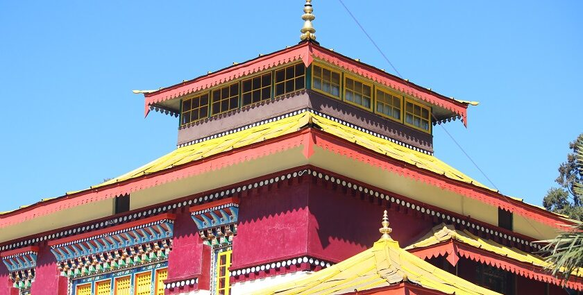
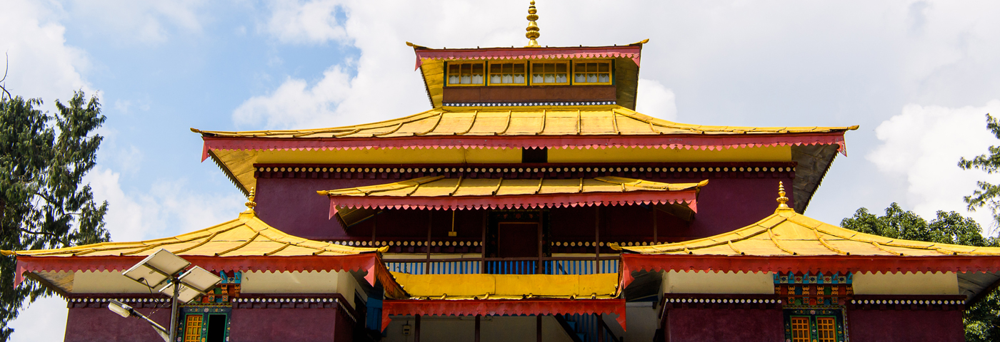
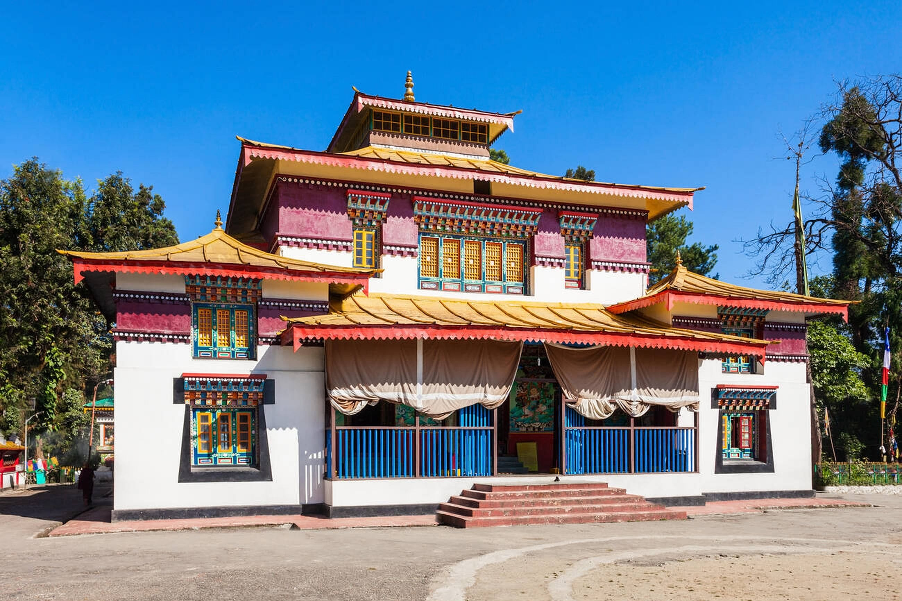

Enchey Monastery is located above Gangtok, Sikkim, and was founded in 1909. Belonging to the Nyingma order of Vajrayana Buddhism, it was built on a site blessed by Lama Druptob Karpo, known for his tantric powers. The name "Enchey" means "Solitary Monastery," and it is considered the abode of protective deities like Khangchendzonga and Yabdean.
Photo Gallery




Key Features
- Chinese pagoda-style architecture with vibrant murals, a golden cupola, and ornately carved windows and pillars.
- Home to about 90 monks and numerous religious icons, including Buddha and Guru Padmasambhava.
- Famous for annual festivals like Cham masked dances and Pang Lhabsol, celebrating Bhutia-Lepcha community bonds.
- Peaceful location above Gangtok with stunning views of the Himalayas and Mount Khangchendzonga.
History & Significance
The monastery was established as a center for spiritual practice and community harmony. It has a rich history of religious teachings, rituals, and cultural preservation, making it one of Sikkim’s most important spiritual sites.
Tourist & Travel Information
Enchey Monastery is easily accessible from Gangtok. Visitors can reach by taxi, shared cabs, or trekking along scenic trails. The surrounding area offers cultural tours, spiritual experiences, and panoramic views of the Himalayan ranges.